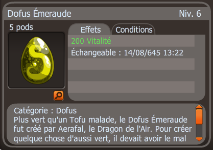

- Description : Plus vert qu’un Tofu malade, le Dofus Émeraude fut créé par Aerafal, le Dragon de l’Air. Pour créer quelque chose d’aussi vert, il devait avoir le mal de l’air. Un comble, non ?
- Niveau : 100
- Effets : 200 Vitalité
- Effet passif : À la fin du tour, confère 4% de vos PVmax en points de bouclier pour chaque ennemi au contact. Les invocations ne sont pas comptabilisées.
- Obtention : Récompense de la série de quête du succès "Vert Emeraude"